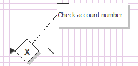

Documentation

Topic content
Concept
In a process model, you can document or describe each of items in process model by add text annotations.
Annotations
Description
Input the information items in process model.
Purpose of object
To document a process model behavior you add Text Annotations to the model. To do that select the Annotation element in the tree of flow objects, then move the mouse into the model area and click again.
Create
1. Create process model.
2. Then point the mouse on "process", as default, this field is on the right side of the Orchestra window.
3. Click on the folder end events to see its content.
4. Click on "Annotation".
5. Click on any place in your process model.
6. Connect it to other process model items, by clicking on the "Annotation" icon and drag and drop the arrow to the to be connected item it.
